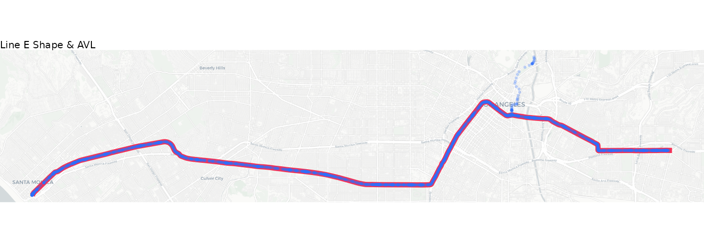
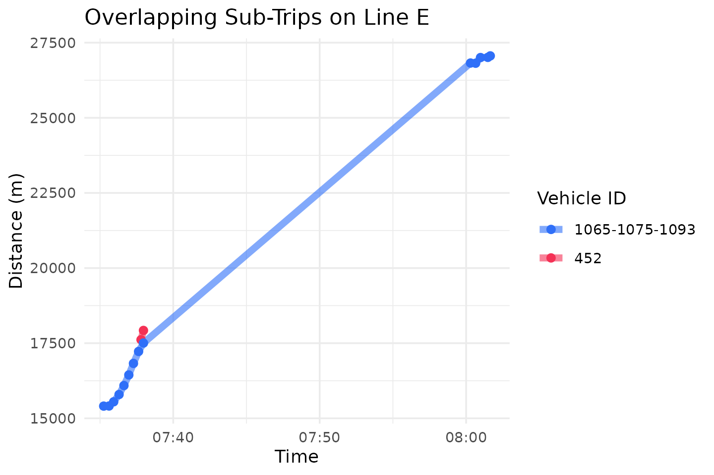
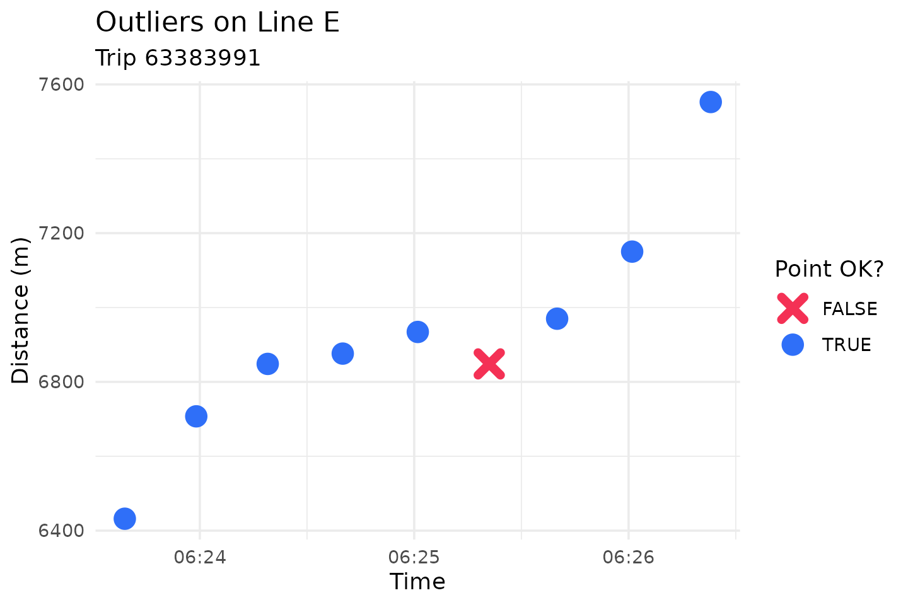
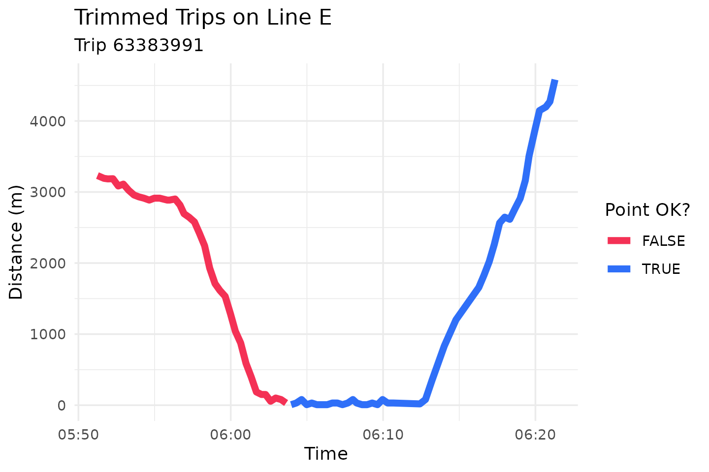
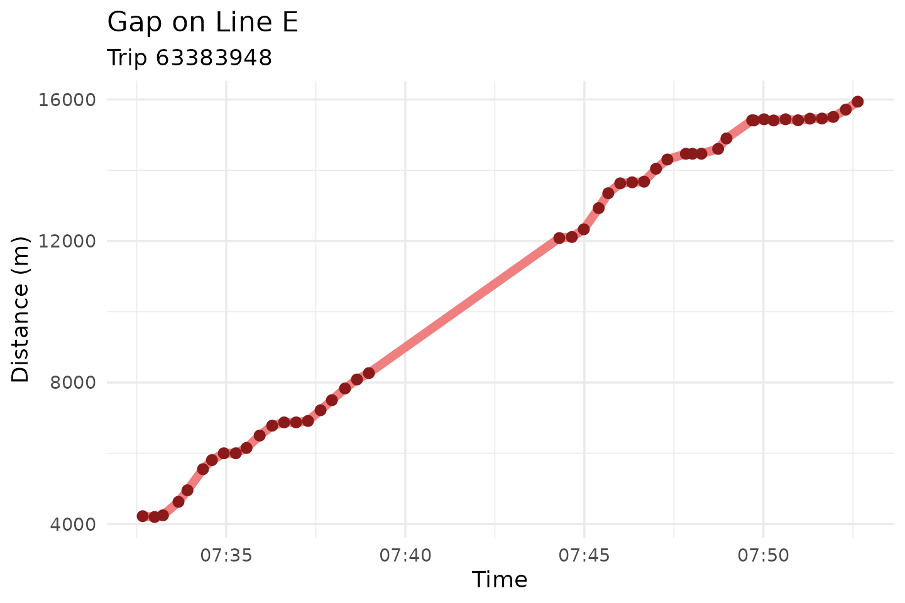
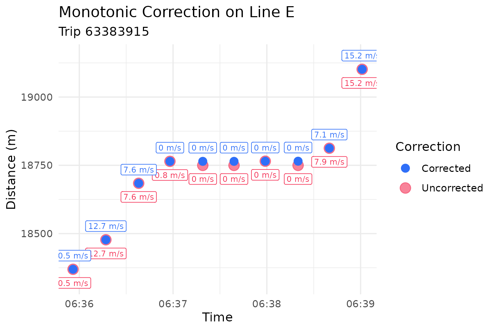

Introduction
In this vignette, we will walk through transittraj’s
entire AVL cleaning workflow, intended to correct or remove problematic
point observations and trips. This seven-step process is summarized
below:
Clip points to buffer: AVL pings beyond a maximum distance from the route are removed.
Project onto route: AVL latitude-longitude points are projected onto the route alignment and coverted to one-dimensional distances.
Remove overlapping subtrips: Trips with multiple vehicles and/or operators are removed.
Remove outlying jumps: Outliers are identified and removed.
Trim trip tails: Leading or trailing deadheads are identified and removed.
Remove insufficient trips: Trips with gaps or a short duration are removed.
Monotonic enforcement: Positions and speeds are corrected to be strictly monotonic.
Check out vignette("articles/input-data-la") to learn
more about the AVL and GTFS data we’ll be using. Let’s begin by loading
the libraries we’ll need:
Step 0: Setup
We’ll begin by setting up our data. We’ll be using
lacmta_avl and lacmta_gtfs for our TIDES AVL
and static GTFS input, respectively.
AVL
For this example, we’ll work with LA Metro’s Line E light rail in the eastbound direction. Let’s filter our AVL data to these specifications:
# Set our filtering parameters
filt_dir <- 0 # 0 is EB, 1 is WB
lineE_id <- "804" # the internal route ID for Line E
# Filter the entire AVL to just the EB
lineE_avl <- lacmta_avl %>%
filter((route_id == lineE_id) & (direction_id == filt_dir))Now our dataset should include only northbound C53 trips. We can see below that this window has about 3,300 individual GPS pings across 16 trips and 3.5 hours.
# Pull attributes about our filtered AVL
total_obs <- dim(lineE_avl)[1]
num_trips <- length(unique(lineE_avl$trip_id_performed))
time_span <- round(max(lineE_avl$event_timestamp) - min(lineE_avl$event_timestamp),
2)
# Print attributes
cat("Total Observations: ", total_obs,
"\nNumber of trips: ", num_trips,
"\nTime span: ", time_span, " hr",
sep = "")
#> Total Observations: 3318
#> Number of trips: 16
#> Time span: 3.53 hrWe’ll note that, even though we’re using rail AVL data here, bus AVL
will work just as well. In fact, transittraj was initially
designed to handle bus data specifically.
GTFS
Next, we should grab the GTFS shape and feed information we want for
this route and direction. transittraj provides a couple
functions to help with this. We’ll start by filtering our GTFS to just
the eastbound Line E:
# Filter the entire GTFS down to EB Line E
lineE_gtfs <- filter_by_route(gtfs = lacmta_gtfs,
route_ids = lineE_id,
dir_id = filt_dir)If we print a summary of this GTFS object, we’ll see that it only contains one route:
summary(lineE_gtfs)
#> tidygtfs object
#> files agency, routes, stop_times, trips, fare_rules, shapes, calendar, calendar_dates, stops
#> agency Metro - Los Angeles
#> service from 2026-05-27 to 2026-06-05
#> uses stop_times (no frequencies)
#> # routes 1
#> # trips 123
#> # stop_ids 29
#> # stop_names 29
#> # shapes 1Now that we have the filtered GTFS, we must pull the shape we want as a simple feature (SF) spatial object. You will need to know two things to do this:
Your
shape_id. As shown above, there is only one shape assigned to the eastbound Line E (shape_id = "804EB_RC_221121"). Many GTFS datasets may have multiple shapes for a single route, corresponding to short-turns, alternate alignments, etc. Check outplot_interactive_gtfs()to explore the shapes in your GTFS.A coordinate reference system. We recommend projecting all spatial data into an appropriate Euclidian coordinate system. Below we use the WGS UTM zone for Los Angeles, Zone 11N (with an EPSG number of 32611).
Now we can use get_shape_geometry() to grab the
shape_id we want, turn it into a spatial line, and project
it to the appropriate coordinate system:
# Set our parameters
lineE_EB_shape_id <- "804EB_RC_221121"
la_CRS <- 32611
# Pull the shape we want
lineE_shape <- get_shape_geometry(gtfs = lineE_gtfs,
shape = lineE_EB_shape_id,
project_crs = la_CRS)If we print this new object, we’ll see that it is one multilinestring
with shape_id = "804EB_RC_221121" and the coordinate system
UTM 11N.
print(lineE_shape)
#> Simple feature collection with 1 feature and 1 field
#> Geometry type: MULTILINESTRING
#> Dimension: XY
#> Bounding box: xmin: 362276 ymin: 3764673 xmax: 393555.7 ymax: 3768928
#> Projected CRS: WGS 84 / UTM zone 11N
#> # A tibble: 1 × 2
#> shape_id geometry
#> <chr> <MULTILINESTRING [m]>
#> 1 804EB_RC_221121 ((362276 3764673, 362291.9 3764699, 362324.6 3764751, 362332.…Visualizing our Starting Data
We now have all the data we need to proceed. But before we do, let’s visualize the AVL points and route geometry so we understand what we’re working with:
# Convert GPS points to spatial objects
# You typically won't need to do this -- this is just for visualization
lineE_sf <- lineE_avl %>%
# As SF
st_as_sf(coords = c("longitude", "latitude"),
crs = 4326) %>%
# Project to DC
st_transform(crs = la_CRS)
# Generate a map
avl_map <- ggplot() +
# Basemap from OSM
ggspatial::annotation_map_tile(type = "cartolight", zoomin = 0,
progress = "none") +
# Add alignment & points
geom_sf(data = lineE_shape, color = "#f43155", linewidth = 1.5) +
geom_sf(data = lineE_sf, color = "#2f6ff8",
alpha = 0.2, size = 0.3) +
# Format our map
theme_void() +
labs(title = "Line E Shape & AVL") +
theme(text = ggplot2::element_text(size = 5))
avl_map
For the most part, our GPS pings follow the route alignment
excellently. But what’s the delay with the points off-route north of
downtown? This pings roughly follow the alignment of Line A and end near
LA Metro’s Division 21 yard. These points most likely correspond to one
or more deadheading vehicle that were logged into a trip but were not
actually in revenue service. transittraj includes functions
intended to identify and remove potential deadheads. We’ll begin
exploring these in the following section.
Steps 1 & 2: Buffer & Linearize
Now that we have our data, we can begin cleaning and processing it. The first two steps we recommend are:
Step 1: Buffer. Clip GPS points to within a certain distance of the route alignment.
Step 2: Linearize. Project GPS points onto the route alignment to retrieve the linear distance from the start of the route.
Both steps are bundled into one function,
get_linear_distances(). There are two main decision
variables for this function:
The projection CRS. This should be the same one you used to create your route shape.
The buffer distance. This will be in the units of your spatial projection. Here we’re using WGS UTM, which is in meters. Thus, all distance measurements you see in the vignette will be in meters.
For this example, we’ll continue using UTM Zone 11N, and we’ll only keep points within 50 meters of the route alignment. This should take care of those deadheading points we saw earlier.
Running the Code
We can now clip and linearize our AVL dataframe using
get_linear_distances():
# Set parameters
buffer = 50 # meters
# Run the cleaning function
lineE_distances <- get_linear_distances(avl_df = lineE_avl,
shape_geometry = lineE_shape,
project_crs = la_CRS,
clip_buffer = buffer)Exploring the Results
Now each observation is represented by a distance from the route’s beginning. Let’s first see how many observations were clipped out:
# Pull dimensions of each
step0_obs <- dim(lineE_avl)[1]
step1_obs <- dim(lineE_distances)[1]
# Print
cat("Initial: ", step0_obs, " obs",
"\nAfter buffer: ", step1_obs, " obs",
"\nDifference: ", (step0_obs - step1_obs), " obs removed")
#> Initial: 3318 obs
#> After buffer: 3268 obs
#> Difference: 50 obs removedWe had 50 observations clipped out of our dataset. We can also take a look at the new header of our dataset:
head(lineE_distances)
#> location_ping_id service_date trip_id_performed speed
#> 1 4af122e0b668d6821335d641a89ad312 2026-05-27 63383915 1.743456
#> 2 ef3b602e52fe3556a7539491e7792c74 2026-05-27 63383915 3.308096
#> 3 a940808be7f3a59066c981bffe3e537a 2026-05-27 63383915 2.145792
#> 4 6df05dfca51b44f25d403356de5a3e0a 2026-05-27 63383915 0.000000
#> 5 5326947f997dad696a09f510d4857d2c 2026-05-27 63383915 0.000000
#> 6 0eeafa189aab82fe0bff169a9dc587f7 2026-05-27 63383915 0.000000
#> vehicle_id event_timestamp direction_id shape_id route_id
#> 1 1047-1048-1185 2026-05-27 05:48:58 0 804EB_RC_221121 804
#> 2 1047-1048-1185 2026-05-27 05:49:19 0 804EB_RC_221121 804
#> 3 1047-1048-1185 2026-05-27 05:49:40 0 804EB_RC_221121 804
#> 4 1047-1048-1185 2026-05-27 05:49:59 0 804EB_RC_221121 804
#> 5 1047-1048-1185 2026-05-27 05:50:20 0 804EB_RC_221121 804
#> 6 1047-1048-1185 2026-05-27 05:50:40 0 804EB_RC_221121 804
#> distance
#> 1 197.58271
#> 2 99.22546
#> 3 98.72317
#> 4 62.66861
#> 5 83.11011
#> 6 31.67278Now, instead of latitude and longitude
columns, we have a single numeric distance column. We will
only work with these one-dimensional distances for the rest of this
vignette.
Step 3: Cleaning Overlapping Subtrips
In some AVL systems, multiple vehicle or operator IDs can be recorded
for the same trip. Sometimes this is okay: there may, for example, be an
operator shift change mid-trip. Other times, however, these multiple
vehicles/operators are logged in at the same time (“overlapping”). This
creates problems, as it becomes difficult for transittraj
to understand what the trip is supposed to be doing.
For Step 3 of the cleaning workflow,
clean_overlapping_subtrips() identifies and removes these
trips. Each distinct “subtrip” (a unique combination of trip ID, vehicle
ID, and operator ID) is identified, then we check whether the time
ranges of these subtrips overlap. There are a few key decision
variables:
Should operator IDs be checked? This will look for overlapping distinct operator IDs in each trip.
If a subtrip has only one observation assigned to it, should it be removed?
Should trips with multiple subtrips that do not overlap be removed?
The LACMTA dataset does not have include operator IDs, so we will not check for operators. We’ll say that it’s okay to leave in subtrips that aren’t overlapping.
Running the Code
Below we use clean_overlapping_subtrips() to identify
and remove problematic trips:
# Set parameters
lineE_check_op <- FALSE
lineE_remove_singles <- TRUE
lineE_remove_non_overlap <- FALSE
# Run function
lineE_cleaned_subtrips <- clean_overlapping_subtrips(
distance_df = lineE_distances,
check_operator = lineE_check_op,
remove_single_observations = lineE_remove_singles,
remove_non_overlapping = lineE_remove_non_overlap
)Exploring the Results
Let’s see how many trips or observations were removed:
# Pull new dimensions
step3_obs <- dim(lineE_cleaned_subtrips)[1]
step1_trips <- length(unique(lineE_distances$trip_id_performed))
step3_trips <- length(unique(lineE_cleaned_subtrips$trip_id_performed))
# Print
cat("Initial: ", step1_obs, " obs, ", step1_trips, " trips",
"\nAfter: ", step3_obs, " obs, ", step3_trips, " trips",
"\nDifference: ", (step1_obs - step3_obs), " obs, ",
(step1_trips - step3_trips), " removed")
#> Initial: 3268 obs, 16 trips
#> After: 3104 obs, 15 trips
#> Difference: 164 obs, 1 removedWe can see that one trip, consisting of 164 points, violated our
requirements. To see what that trip is, we’ll introduce a new feature of
transittraj: the return_removals parameter.
Each cleaning function used in this vignette allows a parameter
return_removals that, when set to TRUE, will
return a dataframe of the points/trips removed through that step and a
brief explanation of why they were removed. Let’s check it out:
# Get removals from previous function
lineE_step3_removals <- clean_overlapping_subtrips(
# Same settigns as before
distance_df = lineE_distances,
check_operator = lineE_check_op,
remove_single_observations = lineE_remove_singles,
remove_non_overlapping = lineE_remove_non_overlap,
# Return removals
return_removals = TRUE
)
# Print removed point
print(lineE_step3_removals)
#> # A tibble: 1 × 7
#> trip_id_performed subtrip n_obs reason action time_range
#> <chr> <chr> <int> <chr> <chr> <iv<dbl>>
#> 1 63384142 NA NA overlapping s… remov… [1779890156, 1779895100)
#> # ℹ 1 more variable: n_subtrips_in_range <int>We can see that this trip, ID 63384142, was removed
because at some point, there were multiple subtrips (i.e., vehicle IDs)
in service at once. Let’s visualize what that looked like:
plot_times <- c(as.POSIXct("2026-05-27 07:35:00",
tz = "America/Los_Angeles"),
as.POSIXct("2026-05-27 08:02:00",
tz = "America/Los_Angeles"))
plot_df <- lineE_distances %>%
filter((trip_id_performed == "63384142") &
(event_timestamp >= plot_times[1]) &
(event_timestamp <= plot_times[2]))
subtrips_plot <- ggplot() +
geom_line(data = plot_df,
aes(x = event_timestamp, y = distance, color = vehicle_id),
linewidth = 2, alpha = 0.6) +
geom_point(data = plot_df,
aes(x = event_timestamp, y = distance, color = vehicle_id),
size = 2) +
scale_color_manual(name = "Vehicle ID",
values = c("1065-1075-1093" = "#2f6ff8",
"452" = "#f43155")) +
theme_minimal() +
labs(x = "Time",
y = "Distance (m)",
title = "Overlapping Sub-Trips on Line E")
subtrips_plot
It looks like, for some reason, a new vehicle – ID 452 –
logged into this trip ID around 7:37, soon after which, data from the
original trainset dropped out before returning shortly after 8:00.
Because it’s hard to tell what actually happened here, we should leave
this trip out.
Step 4: Clean Outlier/Jumps
GPS data, especially in urban areas, is noisy. Sometimes that noise
manifests as a large instantaneous jump that does not match an points’s
surrounding observations. In Step 4, the function
clean_jumps() detects and removes these using median
filters. This has two main decision variables:
The neighborhood width, the total number of points to consider around each observation.
The maximum distance between a point and the median of the neighborhood around it. This can be defined as an absolute distance from the median, in distance units, or as a multiple of the window’s median absolute deviation (MAD) (this is known as a Hampel filter).
For this example, we’ll use the default neighborhood width of 7 (3 points on either side of each observation). We’ll keep our outlier criteria simple (though not very robust) and use a maximum allowable deviation of 80 meters. This means that if any given point is more than 80 meters away from the median of its surrounding points, it will be tossed.
Running the Code
Let’s run clean_jumps() as discussed above. We’ll input
our maximum allowable distance deviation, and set the
cutoff used by a Hampel filter to infinity (this will prevent the Hampel
filter from removing any points):
# Set parameters
lineE_max_jump <- 80 # meters
lineE_min_jump <- -1 * lineE_max_jump # meters
# Run function
lineE_no_jumps <- clean_jumps(distance_df = lineE_cleaned_subtrips,
max_median_deviation = lineE_max_jump,
min_median_deviation = lineE_min_jump,
t_cutoff = Inf)Exploring the Results
Let’s see how many points were removed as outliers from this filter:
# Pull dimensions
step4_obs <- dim(lineE_no_jumps)[1]
# Print
cat("Initial: ", step3_obs, " obs",
"\nAfter: ", step4_obs, " obs",
"\nDifference: ", (step3_obs - step4_obs), " obs removed")
#> Initial: 3104 obs
#> After: 3085 obs
#> Difference: 19 obs removedWith these settings, 19 points were removed. We can use
return_removals = TRUE, just like in Step 3, to take a
closer look at these outlying points:
# Get removals
lineE_step4_removals <- clean_jumps(
# Same settings as before
distance_df = lineE_cleaned_subtrips,
max_median_deviation = lineE_max_jump,
min_median_deviation = lineE_min_jump,
t_cutoff = Inf,
# Return removals
return_removals = TRUE)
# Print the removed points
head(lineE_step4_removals)
#> # A tibble: 6 × 13
#> trip_id_performed event_timestamp distance location_ping_id window_med
#> <chr> <dttm> <dbl> <chr> <dbl>
#> 1 63383915 2026-05-27 06:54:20 24525. 592c6a9ca9508f64bfe… 24605.
#> 2 63383948 2026-05-27 07:24:17 171. fd55ddbf567e31172fa… 80.4
#> 3 63383948 2026-05-27 07:24:21 80.4 33cfe32fd9f610d35f5… 171.
#> 4 63383991 2026-05-27 06:25:21 6848. 743565c9c4c2528876e… 6934.
#> 5 63383991 2026-05-27 06:37:19 15471. d9530962c94a7217eb9… 15383.
#> 6 63383991 2026-05-27 06:37:39 15383. 4d17c4eb2fb5a537961… 15471.
#> # ℹ 8 more variables: window_mad <dbl>, med_dist <dbl>, is_implosion <lgl>,
#> # is_tail <lgl>, ignore_observation <lgl>, mad_ok <lgl>, dev_ok <lgl>,
#> # all_ok <lgl>Let’s some of the pings removed from trip 63383991. We can plot these points around the fourth row above to see the jump:
# Filter dataframe to our tirp & distances
plot_df <- lineE_cleaned_subtrips %>%
filter(trip_id_performed == "63383991") %>%
filter((distance >= 6400) & (distance <= 7600)) %>%
# Join removals
left_join(y = (lineE_step4_removals %>% select(location_ping_id, all_ok)),
by = "location_ping_id") %>%
mutate(all_ok = tidyr::replace_na(all_ok, TRUE))
# Create a plot
jumps_plot <- ggplot() +
# Plot the points
geom_point(data = plot_df,
aes(x = event_timestamp, y = distance,
color = all_ok, shape = all_ok),
size = 3, stroke = 3) +
# Format the points
scale_color_manual(name = "Point OK?",
values = c("FALSE" = "#f43155",
"TRUE" = "#2f6ff8")) +
scale_shape_manual(name = "Point OK?",
values = c("FALSE" = 4,
"TRUE" = 16)) +
# Format the plot
theme_minimal() +
labs(x = "Time",
y = "Distance (m)",
title = "Outliers on Line E",
subtitle = "Trip 63383991")
jumps_plot
This plot makes it pretty clear that this particular point is out of
line with its surroundings. We recommend playing around with this
function’s tuning parameters until you find settings that make sense for
your data. Read more about these options and the theory behind median
filters at help(clean_jumps).
Step 5: Trim Trip Tails
Earlier in this vignette, we used a spatial buffer to clean what
appeared to be deadheads. But what if a trip deadheads close to – or
along – its route alignment? In Step 5, the function
trim_trips() is designed to handle these scenarios by
trimming the tails off of trips.
The function identifies the observations with the minimum and maximum distance values, and removes any observations which occur before/after these points. There is one main decision variable here: should beginning tails be trimmed, ending tails, or both? For this example, we’ll trim both ends of trips.
Running the Code
Let’s run trim_trips(), trimming both the beginning and
ends of each trip:
# Set parameters
lineE_trim_type <- "both"
# Run function
lineE_trimmed <- trim_trips(distance_df = lineE_no_jumps,
trim_type = lineE_trim_type)Exploring the Results
Let’s see what was removed:
# Pull dimensions
step5_obs <- dim(lineE_trimmed)[1]
# Print
cat("Initial: ", step4_obs, " obs",
"\nAfter: ", step5_obs, " obs",
"\nDifference: ", (step4_obs - step5_obs), " obs removed")
#> Initial: 3085 obs
#> After: 2924 obs
#> Difference: 161 obs removedFor this example, some long deadheads may have been removed. Let’s take a look at a the points removed:
lineE_step5_removals <- trim_trips(
# Same settings as before
distance_df = lineE_no_jumps,
trim_type = lineE_trim_type,
# Return removals
return_removals = TRUE
)
head(lineE_step5_removals)
#> # A tibble: 6 × 10
#> trip_id_performed event_timestamp distance min_dist_index max_dist_index
#> <chr> <dttm> <dbl> <int> <int>
#> 1 63383915 2026-05-27 05:48:58 198. 6 243
#> 2 63383915 2026-05-27 05:49:19 99.2 6 243
#> 3 63383915 2026-05-27 05:49:40 98.7 6 243
#> 4 63383915 2026-05-27 05:49:59 62.7 6 243
#> 5 63383915 2026-05-27 05:50:20 83.1 6 243
#> 6 63383917 2026-05-27 06:07:20 55.3 3 210
#> # ℹ 5 more variables: row_index <int>, before_min <lgl>, after_max <lgl>,
#> # obs_ok <lgl>, location_ping_id <chr>We’ll plot the points removed along trip 63383991:
# Filter dataframe to our tirp & distances
plot_df <- lineE_no_jumps %>%
filter(trip_id_performed == "63383991") %>%
filter(distance <= 5000) %>%
# Join removals
left_join(y = (lineE_step5_removals %>% select(location_ping_id, obs_ok)),
by = "location_ping_id") %>%
mutate(obs_ok = tidyr::replace_na(obs_ok, TRUE))
# Create a plot
trimmed_plot <- ggplot() +
# Plot the points
geom_line(data = plot_df,
aes(x = event_timestamp, y = distance,
color = obs_ok),
linewidth = 2) +
# Format the points
scale_color_manual(name = "Point OK?",
values = c("FALSE" = "#f43155",
"TRUE" = "#2f6ff8")) +
# Format the plot
theme_minimal() +
labs(x = "Time",
y = "Distance (m)",
title = "Trimmed Trips on Line E",
subtitle = "Trip 63383991")
trimmed_plot
This train travels along its route for quite a while before reaching the western terminal and turning around. This is likely a deadhead, or a revenue trip logged into the wrong trip ID. Regardless, in order to achieve a clean, monotonic trajectory, we’ll throw out the points occurring before the trip’s starting terminal.
Step 6: Clean Incomplete Trips
AVL or GTFS-rt data is rarely transmitted perfectly. Often, there may
be large gaps of missing data in the middle of trips, or you may have
only a few observations from each trip. For Step 6, the
function clean_incomplete_trips() filters out these trips
There are two main groups of decision variables for this function:
Minimum and maximum trip distances and durations.
Minimum and maximum distance and time gaps between adjacent observations.
For this example, we’ll use a minimum trip distance of 1000 meters, and a minimum trip duration of 120 seconds. Anything will less data than this will be filtered out. Additionally, we’ll remove trips with a gap larger than 1000 meters.
Running the Code
Let’s run clean_incomplete_trips() as discussed
above:
# Set parameters
lineE_min_dist <- 1000 # meters
lineE_min_time <- 120 # seconds
lineE_max_gap <- 1000 # meters
# Run function
lineE_cleaned_incompletes <- clean_incomplete_trips(
distance_df = lineE_trimmed,
min_trip_distance = lineE_min_dist,
min_trip_duration = lineE_min_time,
max_distance_gap = lineE_max_gap
)Exploring the Results
Now that we’ve filtered our dataset, let’s see how many trips have been removed:
step6_obs <- dim(lineE_cleaned_incompletes)[1]
step6_trips <- length(unique(lineE_cleaned_incompletes$trip_id_performed))
step5_trips <- length(unique(lineE_trimmed$trip_id_performed))
cat("Initial: ", step5_obs, " obs, ", step5_trips, " trips",
"\nAfter: ", step6_obs, " obs, ", step6_trips, " trips",
"\nDifference: ", (step5_obs - step6_obs), " obs, ",
(step5_trips - step6_trips), " trips removed",
sep = "")
#> Initial: 2924 obs, 15 trips
#> After: 2130 obs, 11 trips
#> Difference: 794 obs, 4 trips removed4 trips violated our requirements, corresponding to roughly 830
individual observations. As before, we can use
return_removals to take a look at the violating trips:
lineE_step6_removals <- clean_incomplete_trips(
# Same settings as before
distance_df = lineE_trimmed,
min_trip_distance = lineE_min_dist, min_trip_duration = lineE_min_time,
max_distance_gap = lineE_max_gap,
# Return removals
return_removals = TRUE
)
print(lineE_step6_removals)
#> # A tibble: 4 × 16
#> trip_id_performed max_dist min_dist max_time min_time
#> <chr> <dbl> <dbl> <dttm> <dttm>
#> 1 63383935 34944. 18.3 2026-05-27 07:52:59 2026-05-27 06:46:37
#> 2 63383948 35219. 30.7 2026-05-27 08:37:39 2026-05-27 07:10:41
#> 3 63384081 35195. 28.6 2026-05-27 08:39:55 2026-05-27 07:22:59
#> 4 63384103 35130. 4.34 2026-05-27 08:25:54 2026-05-27 07:06:17
#> # ℹ 11 more variables: max_dist_gap <dbl>, max_t_gap <dbl>,
#> # max_dist_gap_id <chr>, max_t_gap_id <chr>, trip_distance <dbl>,
#> # duration <dbl>, dist_ok <lgl>, dur_ok <lgl>, dist_gap_ok <lgl>,
#> # t_gap_ok <lgl>, all_ok <lgl>All of these were removed because of a large gap in data. Let’s take a look at one, trip 63383948:
# Filter dataframe to our tirp & distances
plot_df <- lineE_trimmed %>%
filter(trip_id_performed == "63383948") %>%
filter((distance >= 4000) & (distance <= 16000))
# Create a plot
gaps_plot <- ggplot() +
# Plot the points
geom_line(data = plot_df,
aes(x = event_timestamp, y = distance),
linewidth = 2, color = "lightcoral") +
geom_point(data = plot_df,
aes(x = event_timestamp, y = distance),
size = 2, color = "firebrick4") +
# Format the plot
theme_minimal() +
labs(x = "Time",
y = "Distance (m)",
title = "Gap on Line E",
subtitle = "Trip 63383948")
gaps_plot
We can see this trip’s gap between 8,000 and 12,000 meters. The slope of this line is reasonable, but is may not be reasonable to interpolate between these points, especially if we’re concerned about understanding individual stop-and-go cycles. We’ll leave this – and similar trips – out of our future analyses.
Step 7: Correct for Monotonicity
While GPS noise can result in the large jumps we saw previously, it much more often causes small deviations in observed locations. This creates problems when fitting an interpolating trajectory curve, because if any points drift backwards, the curve will be neither monotonic nor invertible. In Step 7 (the last one!), we will “pull” any backtracking points up to where they should be. Optionally, data can also be made strictly monotonic.
The function make_monotonic() has two decision
variables:
Should speeds be corrected to satisfy monotonicity? AVL speed location can help fit an excellent interpolating curve, but the values of observed speeds must meet certain conditions (known as Fritsch-Carlson constraints) in order to produce a monotonic spline. If your AVL data has speed information, and you plan to use it when fitting a spline (the recommended interpolation method), set
correct_speed = TRUEto guarantee the fit is monotonic.Should the trajectory be made strictly monotonic? This will identify perfectly flat regions can give them a slight upward slope. To be invertible, a trajectory must be strictly increasing, and never constant.
Our AVL dataset does have speeds, and we do want an invertible and
monotonic final trajectory. As such, we’ll correct the speeds to meet
the Fritsch-Carlson constraints, and we will add a distance error of
0.001 meters (1 mm). More information is available at
help(make_monotonic).
Running the Code
Let’s run make_monotonic() using the parameters
discussed above:
# Set parameters
lineE_dist_error <- 0.001
lineE_correct_speeds <- TRUE
# Run function
lineE_mono <- make_monotonic(distance_df = lineE_cleaned_incompletes,
correct_speed = lineE_correct_speeds,
add_distance_error = lineE_dist_error)Exploring the Results
This function modifies existing data, but does not remove any points. The total number of observations should stay the same:
# Pull dimensions
step7_obs <- dim(lineE_mono)[1]
# Print
cat("Initial: ", step6_obs, " obs",
"\nAfter: ", step7_obs, " obs",
"\nDifference: ", (step6_obs - step7_obs), " obs removed")
#> Initial: 2130 obs
#> After: 2130 obs
#> Difference: 0 obs removedAs we would expect, no points have been removed. We can check,
though, if our dataset is now monotonic using
validate_monotonicity(). We’ll ask the function to validate
speeds as well:
# Trimmed DF
step6_val <- validate_monotonicity(distance_df = lineE_trimmed,
check_speed = TRUE)
print(step6_val)
#> weak strict speed
#> FALSE FALSE FALSE
# Monotonic-corrected DF
step7_val <- validate_monotonicity(distance_df = lineE_mono,
check_speed = TRUE)
print(step7_val)
#> weak strict speed
#> TRUE TRUE TRUEWe can see the trimmed dataset did not satisfy weak, strict, or
Fristch-Carlson speed conditions for monotonicity, but the corrected
dataset did. We can also see exactly which points were adjusted, and by
how much, using the parameter return_changes.
Below we plot an example trip, 63383915, around one stop it makes:
# Set filter parameters
plot_trip <- "63383915"
plot_dists <- c(18300, 19300)
# Get old DF
plot_df_before <- lineE_trimmed %>%
filter(trip_id_performed == plot_trip) %>%
filter((distance >= plot_dists[1]) & (distance <= plot_dists[2])) %>%
mutate(speed_label = paste(round(speed, 1), " m/s", sep = ""))
# Get corrected DF
plot_df_after <- lineE_mono %>%
filter(trip_id_performed == plot_trip) %>%
filter((distance >= plot_dists[1]) & (distance <= plot_dists[2])) %>%
mutate(speed_label = paste(round(speed, 1), " m/s", sep = ""))
# Plot
mono_plot <- ggplot() +
geom_point(data = plot_df_before,
aes(x = event_timestamp, y = distance,
color = "Uncorrected"),
size = 4, alpha = 0.6) +
geom_point(data = plot_df_after,
aes(x = event_timestamp, y = distance,
color = "Corrected"),
size = 3, alpha = 1) +
geom_label(data = plot_df_before,
aes(x = event_timestamp, y = distance,
color = "Uncorrected", label = speed_label),
nudge_y = -50, size = 2.5, show.legend = FALSE) +
geom_label(data = plot_df_after,
aes(x = event_timestamp, y = distance,
color = "Corrected", label = speed_label),
nudge_y = 50, size = 2.5, show.legend = FALSE) +
scale_color_manual(name = "Correction",
values= c("Uncorrected" = "#f43155",
"Corrected" = "#2f6ff8")) +
# Format the plot
theme_minimal() +
labs(x = "Time",
y = "Distance (m)",
title = "Monotonic Correction on Line E",
subtitle = paste("Trip ", plot_trip, sep = ""))
mono_plot
In this trip, the GPS backtracks slightly while the train is supposed
to be stopped. The speeds also needed slight adjustments around the
acceleration curve to guarantee a monotonic spline.
make_monotonic() identified and corrected both issues.
Conclusion
That was a lot of cleaning! But we now have a dataset free of
outliers and deadheading trips, and that we know will produce a
monotonic and invertible trajectory function. In the next vignette
(vignette("intro-trajectories")) we will fit and explore
these interpolating curves.